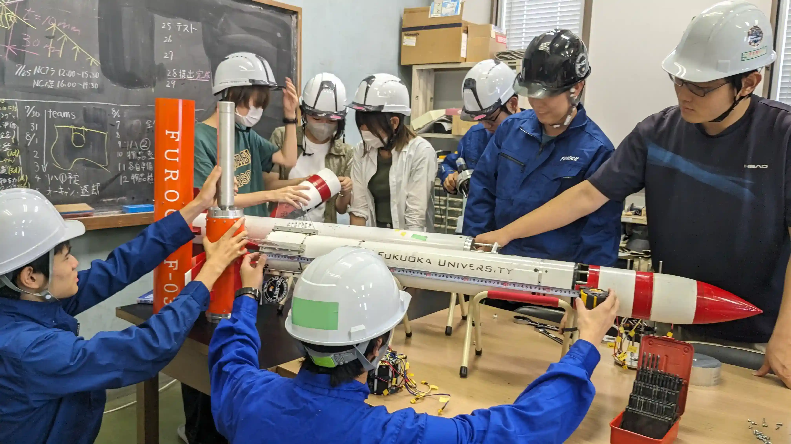
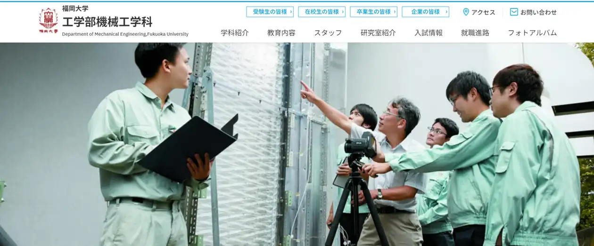

機械工学科
基盤技術から
各分野の
専門的な学習まで、
実践力ある
リーダーエンジニアを
目指して。
機械工学科では、あらゆる工業生産やものづくり技術の基盤となる知識の習得と人づくりを主な目標としています。今後さらなる発展が望まれるエネルギーや環境、航空宇宙やロボット等の産業分野への応用を視野に入れながら、機械力学や材料力学、熱工学や流体工学、加工や制御理論などの基礎から応用と実践までを学びます。また、それらの過程から実践的な情報処理能力や問題解決能力などを身に付け、行動力のあるエンジニアへと育成します。

Keywords
#
カーボン
ニュートラル
#
人工知能
(AI)
#
ロボット
#
ロケット
#
エンジン
#
ものづくり
#
医療福祉
#
3D-
CAD
#
コンピュータ
シミュレーション
機械工学科での
4年間
就職情報
2021年度から2023年度の主な就職先
2023(令和5)年度の主な就職先
（株）九電工、高砂熱学工業（株）、（株）高田工業所、東芝エネルギーシステムズ（株）、ＳＭＣ（株）、西部電機（株）、（株）牧野フライス製作所、三浦工業（株）、タカラスタンダード（株）、スズキ（株）、ナブテスコ（株）、本田技研工業（株）、三菱自動車工業（株）、大同特殊鋼（株）、Ｉ－ＰＥＸ（株）、（株）三井ハイテック、ＴＯＴＯ（株）、（株）日立システムズ、東京エレクトロン（株）、（株）トヨタプロダクションエンジニアリングなど
2022（令和4）年度の主な就職先
（株）大気社、山崎製パン（株）、凸版印刷（株）、昭和鉄工（株）、ＳＭＣ（株）、（株）安川電機、（株）富士通ゼネラル、三菱電機（株）、Ｉ－ＰＥＸ（株）、（株）三井ハイテック、京セラ（株）、スズキ（株）、日産自動車（株）、三菱自動車工業（株）、（株）矢野特殊自動車、（株）日立産業制御ソリューションズ、空研工業（株）、三菱自動車エンジニアリング（株）、三菱電機エンジニアリング（株）、福岡市役所など
2021（令和3）年度の主な就職先
大林道路（株）、鹿島建設（株）、大成建設（株）、（株）九電工、三菱電機ビルテクノサービス（株）、（株）オーレック、ミネベアミツミ（株）、（株）熊平製作所、昭和鉄工（株）、日之出水道機器（株）、九電テクノシステムズ（株）、日立Astemo（株）、（株）富士通ゼネラル、（株）三井ハイテック、ＮＥＣソリューションイノベータ（株）、安川オートメーション・ドライブ（株）、リックス（株）、（株）トヨタプロダクションエンジニアリング、三菱電機エンジニアリング（株）、福岡市消防局など
求める人材像
(求める能力)
知識・理解
高等学校の教育内容を幅広く学び、十分な基礎学力を有している人
技能
学習や課外活動から得た経験を踏まえて、自らの視点で物事を順序立てて説明することができる人
態度・志向性
機械工学に関する高度な専門知識と倫理観を身に付けた機械技術者になることへの夢を持ち、専門知識を社会のために積極的に活用したいと考えている人
世の中にないものを作り出すことに興味がある人
能力・資質
自己研鑽により、英語の資格を取得した人やスポーツ活動・競技会等で顕著な成績をおさめた人
個別サイト

個別サイトを見る
個別サイトを見る